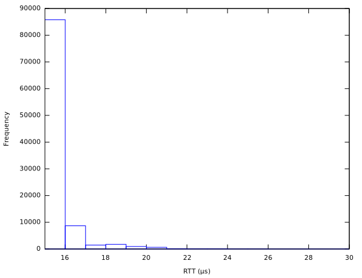

Libtrading is an open source API for high-performance, low-latency trading applications. It implements network protocols used for communicating with exchanges, dark pools, and other trading venues.
The API supports FIX, FIX/FAST, and many proprietary protocols. See documentation for full list of covered exchanges and protocols.
Libtrading developers can be reached at libtrading@librelist.com.
FIX engine round-trip time frequency plot for loopback ping-pong test on 2-way 2.7 GHz Sandy Bridge i7 CPU running Fedora 19/Linux 3.12.6 looks as follows:

Please note that outliers were eliminated from the plot to make it readable. Full data in CSV format is available here
Libtrading is available under 2-clause BSD license.